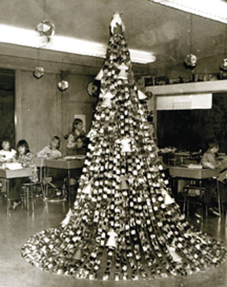

In the winter of 1973, Americans were urged to turn down the heat, turn off the lights and conserve energy. That presented a challenge to those accustomed to decorating lavishly with lights for the holidays.
The challenge was best met by the schoolchildren of America. While adults wondered how they could possibly decorate without lights, the children did what they had always done - decorated with construction paper, garland and paints.
Paper chains were used for more than decorating a tree. In one case they actually were the tree. A sixth grade class in Stambaugh, Mich., made a frame for a tree using a floor lamp as the base, with a metal rod welded to the top and an umbrella frame welded on top of that. Each of the kids made a 9-foot green paper chain, which was attached to the top of the frame and taped to the floor, forming a tree trimmed with paper ornaments.
The challenge of decorating without electricity took Americans back to a simpler time. Windows became “stained glass” as youngsters and adults drew holiday designs on the glass with tempera paint. Soft candlelight was “in” again. Doors and interior walls were decorated in tissue and construction paper. Candy canes and paper chains trimmed trees, and old-fashioned “icicles” were back in style. Red plastic tablecloths were taped on exterior walls and bordered in tinsel, with paper letters spelling out greetings.
Some folks borrowed from a Southwest tradition and decorated with festive luminaries, anchoring candles in sand in the bottom of paper bags.
In 1973, it seemed America had seen the last of the brightly lit holidays, but by Christmas of 1974, for whatever reason, the energy shortage had become a thing of the past, and once again America was aglow with Christmas lights.
Maybe it’s time to bring back the vibe of early ’70s decorations.
|
 LOWELLA YOUNGELL Be creative and save energy: Dress your holiday tree with homemade decorations instead of lights. |
|
|